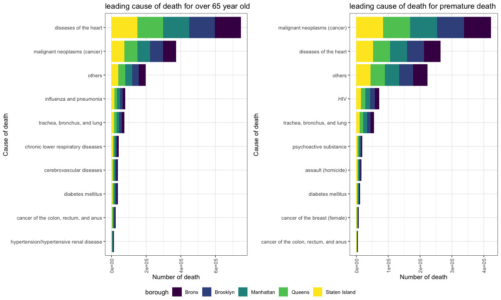

Death
key findings.
change in cause of death by year
- Heart disease and malignant neoplasms (cancer) were by far the most leading cause of death in our selected years.
- HIV dropped out from the top ten while breast cancer emerged as new major causes.

leading cause of death for each race
Different race has similar cause of death pattern with heart disease and malignant neoplasms ranked as the leading two causes of death.
HIV only appeared in the Hispanic and the Black group while breast cancer is a leading cause in the White only.
Accident except poisoning was ranked as 10th for Asians and Hispanics but not in the leading cause list for the other two group.
leading cause of death for different age group
chronic diseas such as heart disease and hypertension were greater risk in aged people
higher proportion of premature death was due to homicide, psychoactive substance and HIV.
leading cause of death for different gender
heart diseas and malignant neoplasms remained the most two major cause of death.
gender specific death: Breast cancer and prostate cancer.
Lower respiratory disease was more of a risk than male, which could be expained by a larger proportion of smoking population in male.
HIV was a greater issue for male and cancer of colon was unique in top ten causes for female
